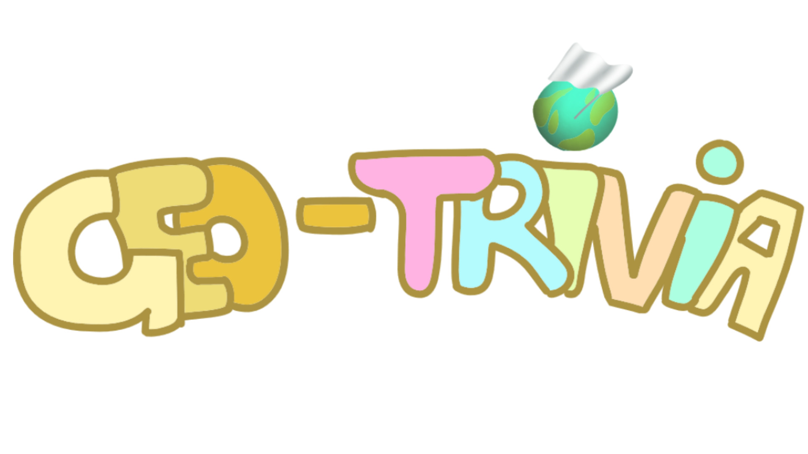

Geo-Trivia is an engaging and educational trivia game designed to test and expand the user’s geographic knowledge. The application offers interactive questions about countries, capitals, landmarks, and cultural facts, creating a fun learning experience.
Features
- Interactive questions on various geographic topics.
- Engaging visuals with dynamic feedback for answers.
- User progress tracking and scorekeeping.
- Mobile-friendly design for accessibility on all devices.
Technologies Used
- HTML5 and CSS3 for structure and styling.
- JavaScript for dynamic and interactive gameplay.
- APIs for fetching real-time geographic data.
- Responsive design for seamless usage across devices.
Wireframes and Prototypes
Geo-Trivia was designed using wireframes to outline the layout and flow of the application. Prototypes were created to refine the user experience and test interactivity.

Demo Video
Watch a demo of Geo-Trivia in action: